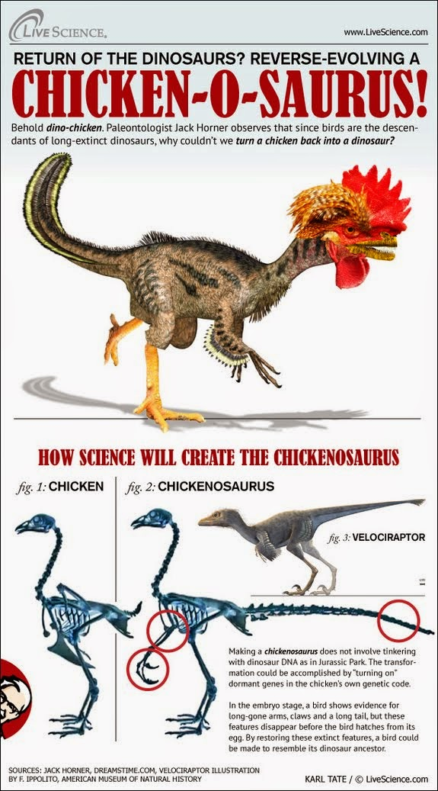

|
| 圖片左方身穿橘色襯衫的就是電影侏羅紀公園中的顧問也是故事中格蘭博士的原型。和 Smithsonian’s 自然歷史博物館的館長開懷大笑，難道是活生生的恐龍即將誕生了嗎？（圖片來源：華盛頓郵報） |
當電影侏羅紀公園剛推出的時候，我和許多的恐龍迷一般對於電影中利用琥珀內的古蚊子所保存恐龍的 DNA （去氧核醣核酸），並進而讓恐龍重生一樣的興奮。試著幻想這樣的場景，有著長脖子的雷龍，優雅的漫步在原始的草原上，三角龍為了一得美女的芳心，而相互卯足全力較勁，翼手龍在空中盤旋，警告著粗魯的不速之客暴龍，正準備闖入大家平靜的生活。這些在現在看來似乎是神話般的場景，似乎得以藉由在琥珀中封存的基因物質，而有了重現的機會。然而，我和許多恐龍迷一樣，當得知就算在現實生活中能找到剛對恐龍飽餐一頓後，卻不幸跌入琥珀中，成為將恐龍遺傳物質完整不缺的保存，蚊子歷史傳說中的木乃伊，也因為數量過於微小，無法讓恐龍的基因充分表現，而讓恐龍生龍活虎，而感到失落。
電影侏羅紀公園裡格蘭博士，對恐龍從古骸轉為有血有肉活生生的存在，感到興奮和畏懼，尤其在人為的過失而造成一連串失控的災難，可能對於讓恐龍重返生命感到遲疑。然而現實生活中的格蘭博士，卻仍舊奮力不懈的讓恐龍重新以牠們原本的面貌。格蘭博士的原型，在以多項恐龍化石收藏聞名的蒙太拿洛磯博物館 (Museum of Rockies) 任教的 Jack Horner 博士，說：讓我們從恐龍的後代開始。他話中所指的恐龍後代正是我們時常在餐桌上見到的雞呀！
雞和恐龍？！任何有雪亮雙眼，和一般智識的平常人，都可以分辨出雞和恐龍偌大的差異。粗略的看來，無論是形態上或是生活習性，似乎都和挖掘出來的恐龍化石找不到相似之處。然而 Horner 博士在 2011 年 TED 的演說中，以一張全身毛茸茸的寵物小狗來說明，千萬年的演化讓這隻狗的祖先，狼，由桀驁不遜演變成今日楚楚可憐的模樣。而關於恐龍和鳥類的演化關係，早在 1870 年英國的生物學家，達爾文的熱誠支持者，赫胥黎 （Henry Huxley）觀察恐龍化石和若干鳥類的骨骼，發現許多相似之處。的確，若從分子和骨骼架構的階層來看，再加上現有的化石證據，雞，或更廣義的說，鳥類是恐龍的後代已經是毋庸置疑的事實。Horner 博士更一步指出，如同人類的社會中，偶爾會有嬰孩帶著尾巴在出生，這些由祖先遺留下來，不再表現的基因，在某個環境的觸發下，又會表現出我們遠古祖先猿猴才有的表徵。馬奎斯的小說百年孤寂，便有一章節講述因為近親交配，而產下有著豬尾巴不受祝福的嬰孩。目前已不是過去智識未化的時代，科學界普遍的認知，雞的基因體中還有未表現或被抑制的恐龍基因存在著，而 Horner 博士的團體所要做的便是從現有的基因序列，讓分子時鐘倒轉，讓那些不再表現，屬於遠古祖先的基因再重新表現。
|  |
| Live Science 的圖解如何從雞胚胎經過一連串的基因修改成恐龍。請注意右下角肯德雞桑德斯上校已經在注意此產品囉！圖片來源：Live Science |
{kind=link}
說要讓分子時鐘倒轉，畢竟不是件容易的事，恐龍滅絕到現在也有好幾億年的時間，恐龍的基因體就像一本遠古時代寫成的手稿，因為常年自然的變遷，修修改改，原本記載著恐龍的原貌，如今卻只剩下潦草凌亂的字跡，唯有描寫雞的註解還能清晰可見。要如何從這些和恐龍有著弱小相關性的註解再找回原文的脈絡，卻也是奧林盃斯山上的諸神也感到畏懼的工作。有著發展生物學（developmental biology）的技術幫助，Horner 博士的團隊要以雞的胚胎開始，試著逐一啓動長出牙齒的基因，生出尾巴的基因，露出爪子的基因，最後雞的相貌逐漸褪去，取而代之的是亙古以來科學家們只靠想像描繪的恐龍外表。Horner 博士將這個未來的新物種，稱之為 Chicken-o-saurus，在拉丁文中 -saurus 有蜥蜴的意思，所以暴龍是 Tyrann-o-saurus 就是暴虐 （Tyrant）的蜥蜴。嗯，光看名字，感覺有點遜，尤其直接翻成中文更變成了雞龍（由此可見我絲毫沒有作譯者的天分），若不仔細追溯名字的起源，或許會以為是肯德基推出的新套餐也說不一定。但，對於在胚胎裡，原本應該要發育成有著彩色羽毛，啄著小米，朝晨發出清亮啼聲的家雞，卻在出生後變成了長著利齒，揮舞著爪子的雞龍，這件事件在地球史上的生物演變史，卻是繼複製羊桃麗之後，我們向奧妙未知的自然疆土，再次豎起了擴張的旗幟。
今日基因改造食物的議題沸沸揚揚的在各界討論著，對生化技術不甚瞭解的一般民眾，對於直接操縱基因產生的基改食物，有著莫名的恐懼，只因這些食物是非自然形成而是人為介入的。身為繼恐龍之後，幾乎要在地球上遍佈足跡的智人後代，其實我們已經對自然的環境造成許多非自然的影響。甚至，我們目前認為的自然，大多都是人類從無意的發現，到刻意的選擇。比如說玉米，早年真正野生的玉米並不如我們現在所食用，打開翠綠的玉米葉便是黃澄澄的玉米粒，而是裹覆著一層難以食用的硬殼，經過先人多年的實驗和與其它品種雜交，最後才得到目前可實用的模樣。同樣的，大家熟知的牛頭犬，最初也不是現在所見的樣子，短鼻和水汪汪的大眼，活像是人類嬰兒的翻版，而是經由養殖業的控制交配，得到的結果。這樣因為符合人類需求而任意操縱的創造，就人類的觀點來看，似乎就像上超級市場買菜般自然，生化技術員提供客制化的商品，並賺進大舉鈔票，這看起來像是讓消費者和生產者雙贏的局面。然而，事實真的是這樣嗎？所許瑪麗雪萊筆下的科學怪人，不這麼同意。人類刻意的培育出的牛頭犬，因為鼻腔過於狹小，而造成呼吸困難，有在睡眠中窒息的危險。而其他生理上的問題，例如膝關節易脫臼，易患風濕，等等遺傳性的疾病，卻在滿足人類需求後，被淡忘。有人說，狗是人類最好的朋友。如果，狗兒知道要當人類的好朋友之前，必須先承受生理上多項缺陷和痛苦，嗯，或許它們也不怎麼想當人類的好朋友。
可惜的是，關於動物福利的問題與人類的生存福祉問題相衝突時，就不屬於道德制衡的範圍。也就是說，我們可以叱罵那些無良養殖業者，為了滿足人類的奢侈慾望，而創造出來不自然而又畸形的生命。但，倘若以瞭解和治癒人類的疾病為出發點，進行的基因改造研究，卻往往能獲得國家研究院的經費贊助，甚至獲得諾貝爾獎的殊榮。我在哈爾賀佐格所寫的“為什麼豬是食物，狗是寵物”一書中讀到一個有趣的問題：
你是否支持為了救癒人類，而進行的動物實驗？
但這個問題，更深一層的問著，那麼今天若是外星人為了治癒他們的絕症，而違背人類意願，將人類綁架來作實驗呢？
有人可能會反駁，人是有智慧的生物，而動物無法證明是否和人類一樣能有知覺自我意識的能力，這兩個問題無法相提並論。這樣的論點，珍古德在發表黑猩猩行為研究時，因為在論文中使用人名而非當時使用的編號，而以不當的擬人，帶入非科學理性的情感，而遭到當時動物行為領域的排擠。同樣的，螞蟻研究權威 E.O. 威爾遜，也因為他主張螞蟻擁有智慧，而在研討會上被潑了一杯水。（雖然，威爾遜認為螞蟻有智慧，而且對他研究的螞蟻充滿了愛與熱誠，但他可能會覺得很煩惱，如果要幫他所研究上萬隻螞蟻取名字。 ）套一句珍古德的論點，每天要面對自然險惡的動物們，實在很難相信它們不具備任何判斷和預估風險的智識。雖然不否認動物的智慧，但兩人都對用動物來進行活體實驗保持支持的態度，只要前提下是能創造舒適的實驗環境給這些因為人類福利而犧牲的動物們。所以，照這樣的邏輯來看，若有一天比我們高等外星人，將我綁架，關在狹小的實驗室，並用號碼來稱呼我，我也應該為了外星人長遠的福祉而犧牲感到榮幸。這樣思考最後的結論，究竟還是與道德無關，只能非常鴕鳥的請 NASA 停止尋找高等外星生物吧！
因為前面的思考， Chickenosaurus （雞龍）的研究，若只是為了生產寵物恐龍，那就會屬於好萊塢或生產玩具企業的資金範疇，然而這項研究所包含的古基因的重起技術，卻可以在醫學獲得應用，因此獲得了學術界關注的價值。在星際大戰系列的導演喬治盧卡斯熱情贊助下， Dr. Horner 藉由已成功地最後從雞的胚胎培育出有如爬蟲類的長尾巴。而早在 Dr. Horner 的雞尾巴前，哈佛醫學院早就發表了長出如鱷魚般短小牙齒的雞胚胎 [1]。近日在耶魯研究室 [2]，考古學家和發展生物學家，更為了瞭解遺傳的近程，成功將雞的胚胎中原本欲生成喙逆轉如迅猛龍（Velociraptor）般的短鼻，雖然長出短鼻的雞胚胎，最後未能順利出生，卻讓長久以來只能看著古骸幻想這些古生物的形影，和欲瞭解演化透過基因形成如今我們所看到的生物的生物學家大為興奮。除了能夠更加瞭解演化，從事這項研究的科學家們，給予更高的期望，希望能藉由基因轉殖工程，能更進一步瞭解這些古基因對修復和再生醫學的影響。
 |
| 日前成功培育出有著如短吻鱷（最右方）般短小嘴鼻的雞胚胎骨骼，與控制組的未經基因修改的雞胚胎（最左方）比較。圖片來源：Live Science |
然而看著這些的研究，我卻想起了一部由法國科幻小說家皮埃爾布勒著作，經常遭到好萊塢改編的科幻電影，Planet of Apes（最近的一個版本是由科洛弗檔案導演執導的猩球崛起）的內容。故事的內容是指一群太空科學家，在星際旅遊時誤闖了一個由猿人統治的星球，在被奴役和虐待後，終於逃出而回到了地球，卻在回到地球後，發現地球早已被猿人入侵，而以為逃出的星球，其實就是未來的地球呀！所以話說回來，真正有著高等智慧的”外星人”搞不好是由我們人類親手創造的呀！雖然覺得能擁有一隻雞龍將會是一件很酷的事情，然而就像和歌德筆下和惡魔交易的浮士德，毫無約束的智識發展與創造，或許會將未來導向我們再也無法控制的軌道。史帝芬霍金曾在最近發表對人工智慧的看法，他表示電腦的進步比起人類的演化快速許多，他擔憂沒有約束的人工智慧發展或許會直接導致人類的滅絕。
 |
| 讓在科幻小說裡的永遠留在科幻小說吧！圖片來源：Wikipedia |
不論是基因工程或人工智慧，人類在生存上都面臨了其他物種不曾面臨的複雜抉擇，無人能正確斷言如何作才是正確，也沒有正確的模型可供預測。當年在曼哈頓計畫中，製造原子彈的科學家們，在知曉廣島和長崎的慘狀後，一生帶著懊悔的愧疚感，成為反核武行列中最真誠的擁護者。所以，對於我們所擁有，幾乎沒有界限的智慧的力量，或許唯一能夠依靠的準則，卻是最簡單不過的道理，那便是面對自然界中廣袤無際，累積千萬年而成的知識之海，保持“謙遜”。
作者的碎碎念：
話又說回來，比起從事製造法蘭肯斯坦的生化怪物，教會即使不小心把電源插頭拔掉，也不喊聲痛的電腦辨認情緒，運用邏輯思考，似乎更”人性”一點！
延伸閱讀：
- 華盛頓郵報關於 Jack Horner 的報導
- NPR 關於耶魯大學的雞胚胎的實驗
- Wikipedia on GMO
參考資料：
[1] Harris, M., Hasso, S., Ferguson, M., & Fallon, J. (2005). The Development of Archosaurian First-Generation Teeth in a Chicken Mutant. Current Biology, 371-377. doi:10.1016/j.cub.2005.12.047 (Fulltext)
[2] Bhullar, B.-A. S., Morris, Z. S., Sefton, E. M., Tok, A., Tokita, M., Namkoong, B., Camacho, J., Burnham, D. A. and Abzhanov, A. (2015), A molecular mechanism for the origin of a key evolutionary innovation, the bird beak and palate, revealed by an integrative approach to major transitions in vertebrate history. Evolution. doi: 10.1111/evo.12684 (Abstract)
| Evernote helps you remember everything and get organized effortlessly. Download Evernote. |